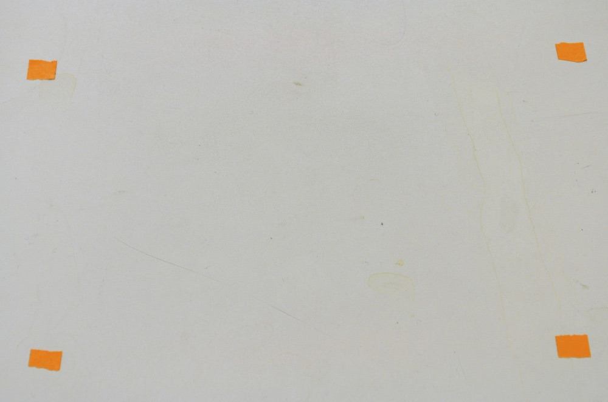

4.1 Arranging cameras for stereo photography
The basic idea behind a stereo camera setup is to use information from two different views of the same object in order to reconstruct features visible in both views into 3D. A single view or image of an object has a information on the shape of features along the two dimensions of the image plane but not along the third dimension (going into and out of the image plane). Thus, by combining the information from two different views it is possible to obtain three-dimensional information on position and shape.
There are a number of ways to arrange cameras in stereo. This section will outline some general considerations to help you determine which camera arrangement will work best for your application. Once you've found a configuration that works well for your application, make sure you check its accuracy (either using the calibration images or a separate set of images before collecting data.
Materials needed for this section:
- 2 cameras (see Choosing cameras for stereo photography)
- Camera remotes
- 2 sturdy tripods
- Tape
General considerations in arranging the cameras:
1. The views among the cameras must overlap such that the feature or features of interest are visible in both camera views. If you want to collect data on features around an entire object (for example the top, side and bottom of a skull) you can rotate the specimen and take two or more pairs of photographs of the same object. You'll end up with two or more separate sets of landmarks and/or curves. As long as there are three or more landmarks common among the different sets these can be aligned, or "unified", based on these common landmarks into a single set. StereoMorph has a function that will do this automatically, which will be detailed in Unification of reconstructed sets.
2. Theoretically, there is a trade-off between the ease of digitizing and reconstruction accuracy. For instance, if the angle between two camera views in a stereo setup is 90 degrees,
you will have high reconstruction accuracy (together, the two views give you full information on a point's position along all three axes) however the views will be so divergent that it will be difficult to identify the same point in both views. A point visible in one view may not even be visible in the other. If the angle between two cameras is reduced to around 20 degrees
it's much easier to find the same point in both views (the views are nearly the same), however these slight differences in position are now the only information available on the point's position along the depth axis (orthogonal to the image planes). In practice, I've found that cameras positioned with a small angle relative to one another still provide high reconstruction accuracy but do not work as well for curve reconstruction. It's best to start with the cameras as close together as possible (more convergent views), test the accuracy and make the views more divergent if the accuracy is worse than what you're willing to accept.
The cameras were arranged as shown below for the accompanying example project.
This is a nice setup because the orientation of both views is the same. By moving the cameras and changing the angle you can change the extent of divergence between the views. Also the table provides an easy place to set the objects and lights. An alternative setup is to have one camera on the tabletop and the other camera on the floor.
A disadvantage to this setup is that the view from one camera will be "upside-down" relative to the other. You can flip all of the images once they're loaded on your computer to compensate for this.
3. It is essential that the cameras not move during the entire process of calibration and photographing specimens. The cameras can be calibrated before or after data collection but throughout and between these steps the cameras must remain in the exact same position. Because the camera is often positioned half a meter or more away from the object, even a small shift of the camera can translate into a large shift in the image frame, causing large inaccuracies.
If you position a tripod on a smooth surface, such as a table top, put small rubber squares under each tripod foot to keep the tripod from slipping.
4. Before you take any photographs, you can attach small pieces of tape to the tabletop or some other fixed surface within the calibration space and visible from both camera views.
By taking a photograph from both views before you begin and then after you have finished photographing all objects with a particular calibration you can compare the before and after photographs to be sure that both cameras remained motionless throughout the photographing process.
5. Just as the cameras should not move during the entire process of calibration and object photographing, the camera settings themselves should not change. This includes the zoom (focal length) and the focus. The calibration is specific to a particular focal length and focus, so if either of these changes the calibration will no longer be accurate. Additionally, if your lens has vibration reduction (VR) you should turn this off. Vibration reduction uses a small gyroscope in the lens to compensate for camera motion and reduce blur. The spinning and stopping of the gyroscope can cause the image frame to shift randomly while taking photos.
6. It's best to use a remote (wireless or cord) to release the shutter so you minimizing touching the shutter button on the cameras as much as possible.
I've found that pressing buttons on the camera lightly (such as for reviewing photos) doesn't cause significant movement of the cameras but pressing the shutter button requires more force and doing it repeatedly causes the cameras to move significantly over a series of photographs. A wireless remote is the best option since you can trigger both cameras with one remote (note that if the objects you are photographing are not moving the photographs do not have to be taken simultaneously).
7. Make sure that all connections and screws in the tripod and between the tripod and the camera are tight. This reduces the possibility of any motion of the cameras during data collection.
8. Set the cameras to the smallest aperture (this is the largest f-value).
The smaller the aperture, the greater the depth of field (i.e. the more things are in focus both close and far away from the camera). This is essential in a stereo camera setup because in order to digitize points accurately throughout the calibration volume they must be in focus.
9. If possible, set your camera to manual mode.
This allows you to control both the aperture and shutter speed. Once you have the cameras arranged take some sample photos of the objects to find a good shutter speed (exposure) for your lighting. I've found that the automatic exposure on my camera is not always reliable and that it's better to simply have the same exposure throughout.